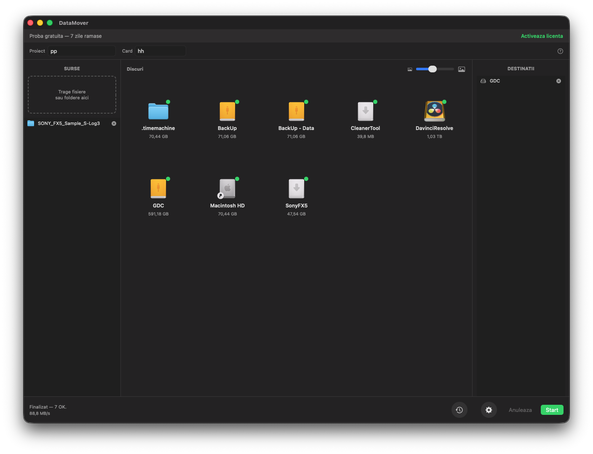
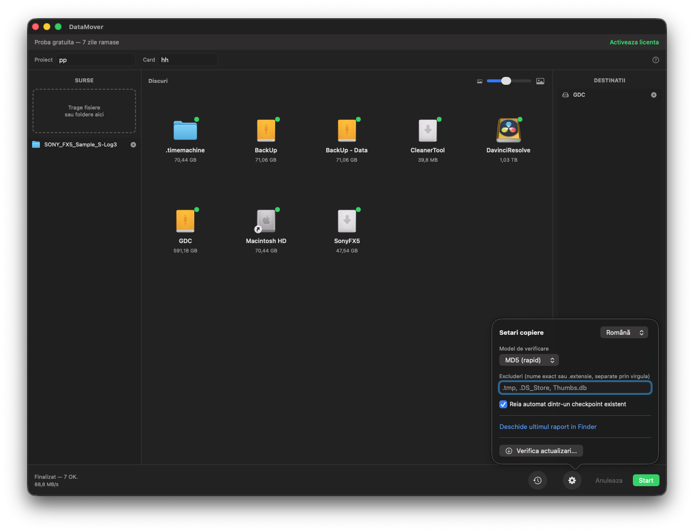
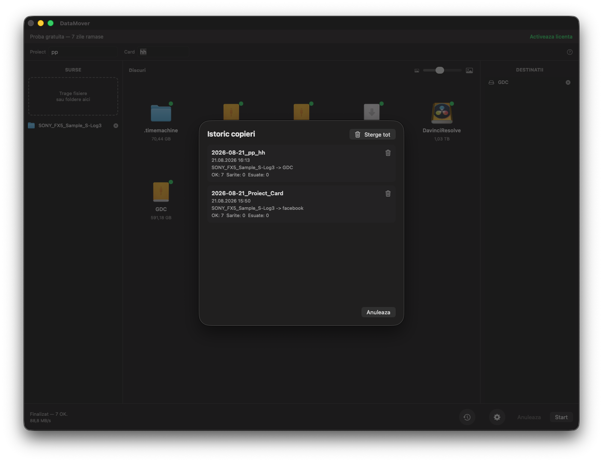
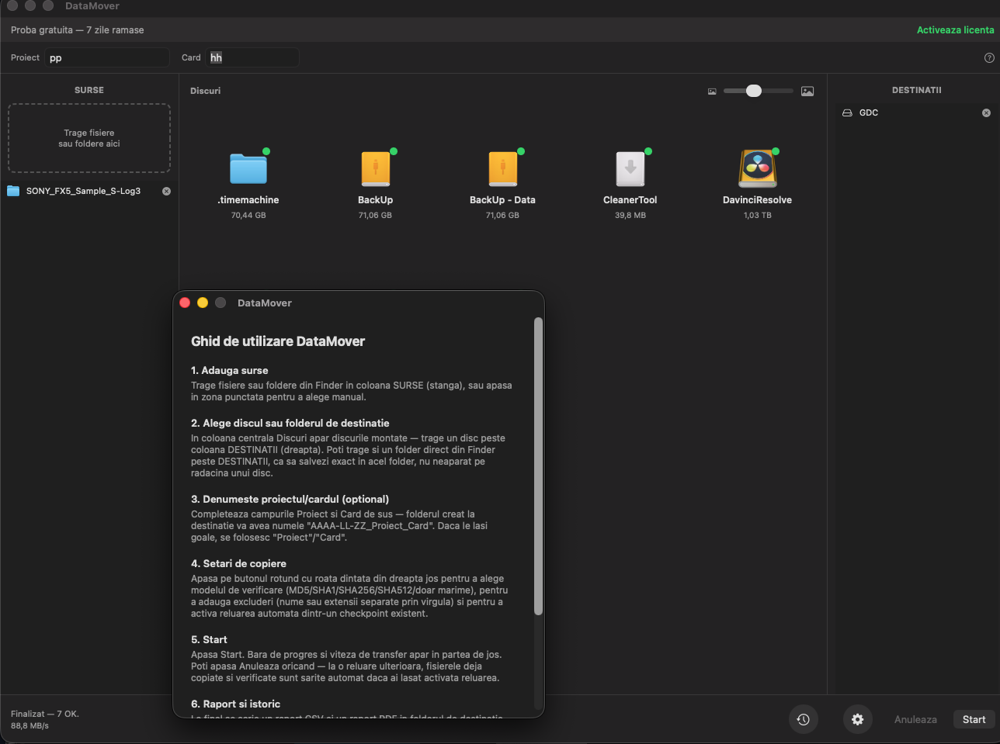

macOS & Windows
Offload verificat pentru echipele de productie video.
Vezi codul sursa Toate versiunile
DERULEAZA




Ce face
Construit pentru cardurile care nu au voie sa fie sterse pana esti sigur ca datele au ajuns intacte in cel putin doua locuri.
Catre oricate destinatii deodata — drive-uri externe, NAS sau foldere locale.
MD5, SHA-1, SHA-256, SHA-512, sau comparatie rapida dupa dimensiune.
Checkpoint la fiecare fisier — daca se intrerupe, continua exact de unde a ramas.
Export CSV si PDF, cu status colorat pe fisier si timestamp exact.
Recunoaste cardurile introduse fara sa cauti manual prin Finder sau Explorer.
Nu recopiaza ce a mai fost deja copiat corect — economiseste timp pe carduri mari.
Scoate in siguranta cardul direct din aplicatie dupa un offload verificat.
Interfata gandita pentru lucru pe platou sau in camera de montaj, seara.
Aplicatia se auto-verifica si te anunta cand apare o versiune noua.
Algoritmi de verificare
Cum se foloseste
Iei ultima versiune pentru Mac sau Windows din pagina de Releases si o instalezi normal.
DataMover il detecteaza automat, fara sa umbli manual prin foldere.
Adaugi oricate foldere sau drive-uri de backup dorești — copierea se face simultan pe toate.
SHA-256 e recomandat pentru siguranta maxima; MD5 e mai rapid pe carduri foarte mari.
La final primesti un raport CSV/PDF cu statusul fiecarui fisier si poti ejecta cardul direct din aplicatie.
Activare
✓ Probă gratuită de 7 zile, complet funcțională — fără card, fără cont.
Codul sursă e disponibil pe GitHub sub licență MIT, dar aplicația compilată are nevoie de un cod de activare, legat de calculatorul tău, ca să poată porni. Este o donație, nu un preț de listă — mă ajută să acopăr costurile de dezvoltare (abonamente, unelte de lucru) și să continui să întrețin și îmbunătățesc aplicația.
Pas 1
Deschizi aplicația — vezi un ID de mașină direct în fereastra de activare.
Pas 2
Îmi scrii pe WhatsApp (buton mai jos) — îți trimit un link de plată pe Revolut.
Pas 3
După plată, îmi trimiți ID-ul de mașină și primești codul personal de activare.
Cerinte
Sistem
macOS & Windows
Destinatii
Nelimitate, simultan
Licenta
Cod sursă: MIT · Activare: prin donație